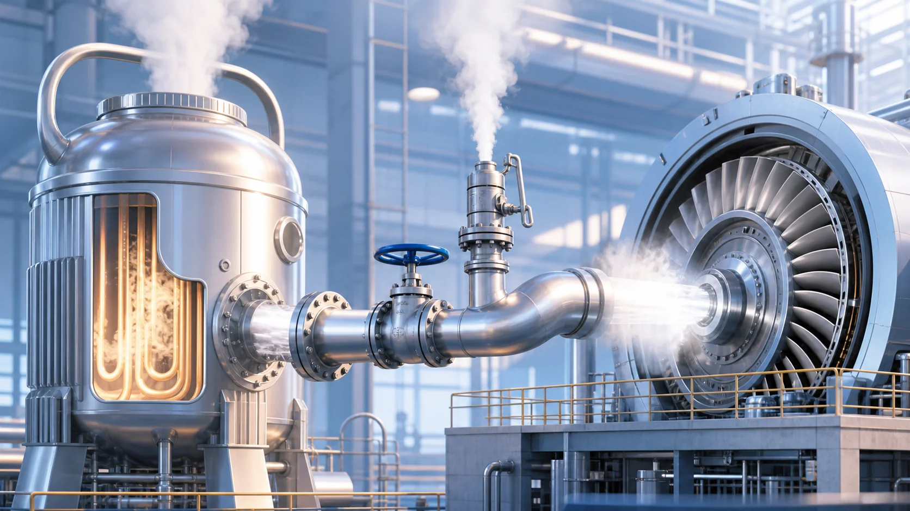
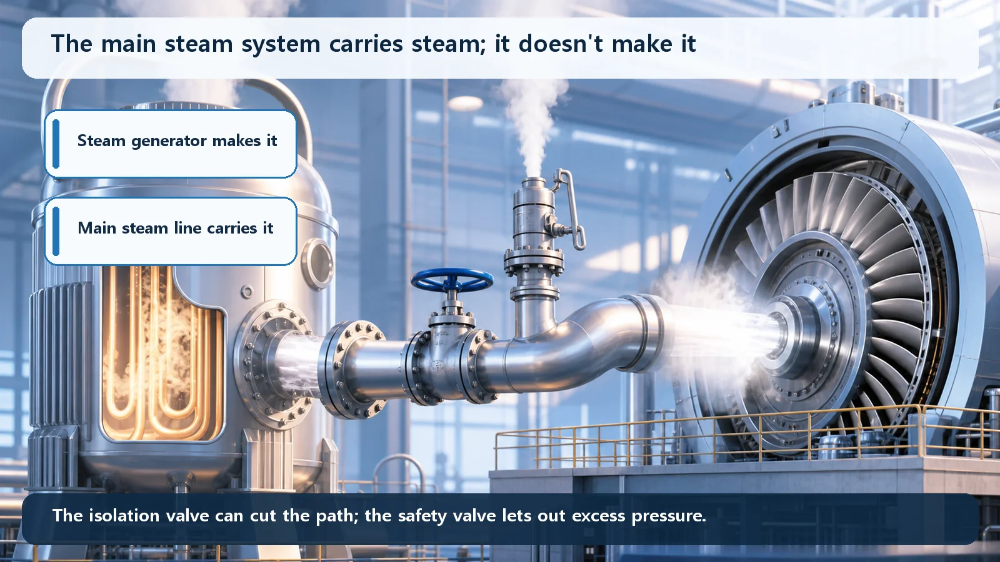
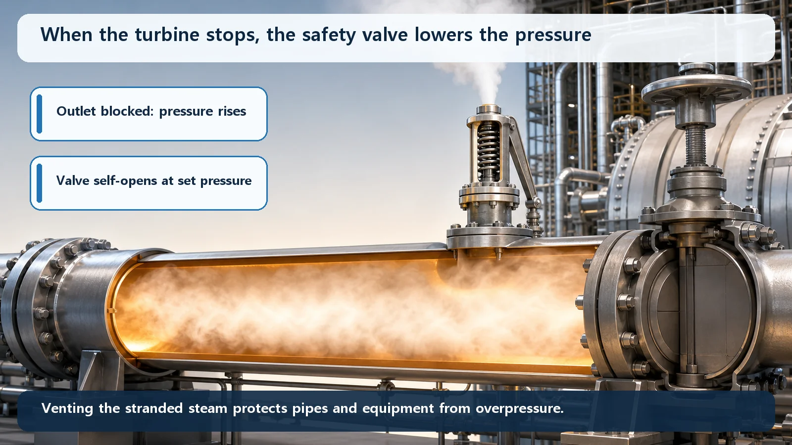

Reactor Types & Plant Systems · 188
From a Kettle's Hot Breath to a Spinning Generator — The Main Steam System That Carries Steam to the Turbine
Like the spout of a boiling kettle aimed at a pinwheel, the main steam system carries the steam that turns the turbine, and it has valves ready for when that path must close or vent.

The main steam system is the piping that carries steam from the steam generators (or, in a boiling water reactor, from the reactor) to the turbine. It does not make steam; it delivers the steam's energy, can be cut off by the main steam isolation valves in an emergency, and is protected from overpressure by safety valves.
Ever left a kettle boiling? The lid rattles and a jet of white steam shoots from the spout. Hold a paper pinwheel in front of it and it spins all by itself, pushed by invisible hot vapor. Child's play, yet this scene holds almost the whole core of how a nuclear power plant makes electricity.
Today's subject plays the role of that spout and pipe: the main steam system, the passage at the middle of the journey from a reactor core's heat to electricity.
So what exactly is the main steam system?
One sentence first. The main steam system is the piping system that carries the steam made in the steam generators (or in the reactor) to the turbine. In kettle terms, it's the pipe that delivers the hot vapor from the spout to the pinwheel, and the pinwheel spun by that vapor is the turbine.
The path to electricity, very simply: fission heats water, the heat makes steam, the steam spins a giant pinwheel called a turbine, and the generator attached to it produces electricity. Of those four steps, today's star is step three, the passage that takes the steam to the turbine. Without a bridge carrying energy as steam from the core to the generator, nothing happens. The main steam system is that bridge.

Making steam and carrying steam are different jobs
Here's an easy trap: "Isn't the main steam system what makes the steam?" No. Making steam is the job of the steam generator (or, in a boiling water reactor, the reactor itself); the main steam system carries that steam. In a kettle, the body boils the water into vapor, while the spout and pipe take the vapor to the pinwheel. Making and carrying are separate jobs.
Where the steam comes from depends a little on the reactor type. In the familiar pressurized water reactor, the hot water that has passed through the core only hands over its heat inside the steam generator, and separate water beside it boils into steam. The core water and the steam headed for the turbine never mix; only heat is exchanged. In a boiling water reactor, by contrast, water boils directly inside the reactor and that steam goes straight to the turbine. The source differs, but the main steam system's role, carrying that steam to the turbine, is the same.
Three missions in one pipe
"One big pipe" is only half the picture. The system carries three missions, shared among its parts.
First, it delivers energy. The heat the core worked hard to make is stored in the steam, and that steam has to reach the turbine without leaking or cooling. Thick, heavy steel pipes called the main steam lines do this. The better the steam's energy reaches the turbine, the more electricity comes out, so how smoothly this passage runs ties directly to generating efficiency.
Second, it can cut the path when needed (isolation). Normally the path must stay wide open, but if a pipe breaks or something goes wrong downstream, it has to close fast. That's the job of the main steam isolation valve, usually called the MSIV. Like a toll gate barrier dropping to stop traffic after a highway accident, the MSIV snaps the steam path shut within seconds in an emergency, separating the steam generator (or reactor) from the troubled side. This keeps steam and energy from escaping and the reactor from cooling too fast.
Third, it safely lets out excess pressure (overpressure protection). If the turbine suddenly stops and the steam has nowhere to go, the safety valves are ready.

Stranded steam? The safety valve takes it
When the plant is running well, the steam happily spins the turbine and moves on. But if the turbine suddenly stops for some reason, the steam that's still being made instantly has nowhere to go. It's like keeping a kettle on the boil while plugging the spout with your hand: the pressure inside climbs quickly.
That's when the safety valves step in. When the pressure tries to exceed a set limit, a safety valve opens on its own, with no one operating it, and releases steam, for example to the atmosphere, bringing the pressure down. It's the same principle as the weight on a pressure cooker letting steam hiss out. Pipes and equipment are protected from excessive pressure. Quietly shut most of the time, it opens only when truly needed.
This ability to "draw steam off" can also be useful in an unexpected way. If the normal path for removing heat is blocked, for instance in an accident, steam can be drawn off a little at a time from the steam generator side while water is fed in, giving an emergency route for removing the residual heat left in the core. An extra way to let steam out also means an extra way to get rid of heat.
Just how hot and powerful is this steam?
In a pressurized water reactor, the steam headed for the turbine is at roughly several megapascals (several tens of times atmospheric pressure) and at a temperature of a few hundred degrees, far above water's 100°C boiling point. That's why the main steam lines are so thick and sturdy, and every valve is designed to act quickly and reliably.
Don't mix up the look-alikes
The main steam system and the feedwater system run in opposite directions. The main steam system is the path that sends steam out to the turbine; the feedwater system is the path that returns the water, condensed after spinning the turbine, back to the steam generators. Together they complete one big loop: water leaves as steam and comes back as water. Today we looked only at the outbound side; the return side is a story for another time.
Also, in a pressurized water reactor this steam is not water that passed through the core. The core water (primary side) and the steam headed for the turbine (secondary side) exchange only heat across the steam generator and never mix. It's easy to assume "the steam spinning the turbine is radioactive water straight from the core," but in a pressurized water reactor that isn't so.
Today's takeaways
- The main steam system carries steam from the steam generators (PWR) or the reactor (BWR) to the turbine.
- The steam generator makes steam; the main steam system carries it. The source varies by reactor type, but the carrying role is common.
- It has three missions: (1) the main steam lines deliver the steam's energy to the turbine, (2) the main steam isolation valve (MSIV) cuts the path in an emergency, and (3) safety valves vent the overpressure of stranded steam to protect equipment.
- This steam outlet can also serve as an emergency route for removing the core's residual heat in an accident.
- The main steam system (outbound) and the feedwater system (return) are paired systems running in opposite directions, and in a PWR the turbine steam is separate secondary water that never mixes with the water that passed through the core.
Behind the little pinwheel lies careful design: thick pipes and fast valves that carry hot, powerful steam safely. Not a showy component, the main steam system quietly holds the bridge that turns the core's heat into electricity.